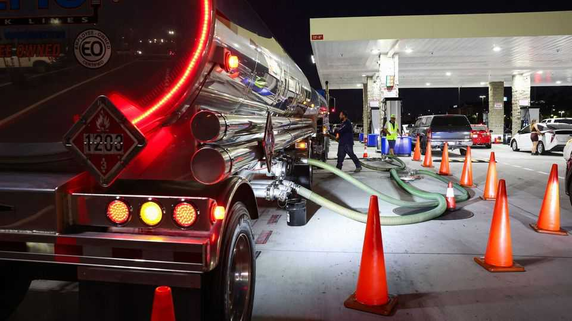
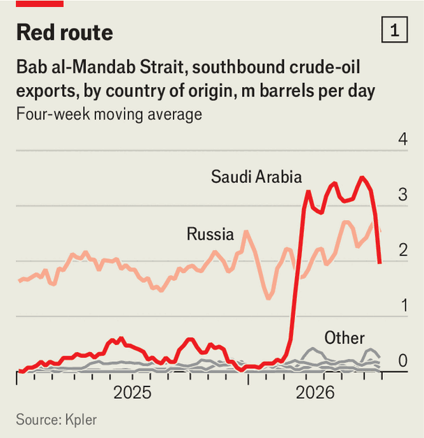
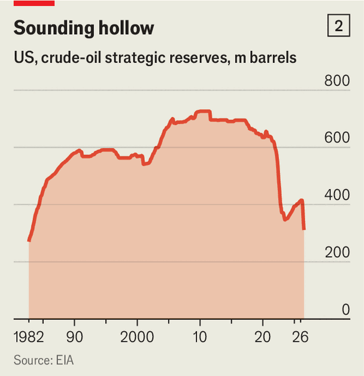
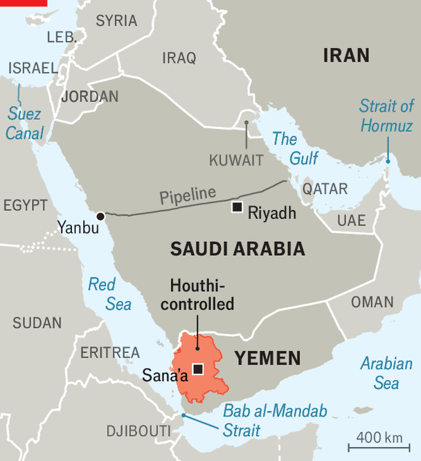
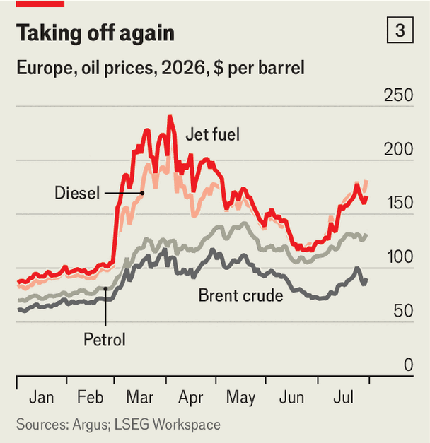

Oil prices remain highly flammable
As tensions flare in the Gulf, triple digits could return in a flash

Jul 30th 2026
A CYNIC MIGHT say that ceasefires between Iran and America hold well between attacks. In the past fortnight a pattern has become familiar. A pause in fighting is declared; one party breaches it; tit-for-tat strikes and superlative threats ensue; détente is announced once again.
This cycle changes little of the reality on the ground: traffic through the Strait of Hormuz remains anaemic and the global energy system is under strain. Talks have not progressed and Iran insists it wants sole control of the strait. Yet oil markets remain optimistic that a lasting truce is around the corner. At $90-odd a barrel, Brent crude, the global benchmark, is well short of its $102 intraday peak on July 23rd.
How big is the ongoing risk to the oil price? Five months of war have failed to propel Brent futures to, say, $150 a barrel. But today oil markets are more fragile than in March, for three reasons: the Hormuz problem has grown more intractable; new threats have emerged; and protective buffers have worn thin.

Hormuz is at the heart of recent escalations. A loosely worded ceasefire signed by America and Iran in June recognised Iran’s right to help “define the future administration” of the strait. So each time America facilitates the passage of tankers in a channel Iran does not control, Iran takes that as a breach, and some tankers are attacked. Other shipowners take fright, as do insurers. War-risk insurance premiums can now reach 12% of a ship’s value, up from roughly 0.25% before the war, says a trader.
The result is a severe slowdown in traffic, which struggles to rebound even after the fighting ebbs. Just nine ships crossed the strait on July 28th, down from a peak of 60 in late June. Flows of oil have shrunk by nine-tenths, to 800,000 barrels per day (b/d). The tankers that do cross almost always have their transponders off. Only 8m barrels offered by the Emirati national oil firm in mid-July were awarded to refiners in South Korea, Taiwan and Japan, compared with 20m per tender in June. Iran seems unlikely to release its chokehold before America makes serious concessions. Gulf countries that had begun cranking up output are cutting it again, which may delay a return to normal flows to the start of 2027.
Of the new threats, the more serious is a blockade on Saudi exports declared by Yemen’s Houthi rebels on July 20th, in retaliation for Saudi Arabia’s own blockade of ports they control. The Iran-backed group has since struck some Saudi oil facilities and several ships that were ferrying Saudi crude in the Red Sea, or were en route to pick up some.

The Houthis’ actions have opened a new front in the Iran war and fixed traders’ anxieties on a second chokepoint. Since April Saudi Arabia, unable to export through Hormuz, has sent an extra 2.5m-3.5m b/d of crude—around half its daily exports in 2025—via a pipeline to Yanbu, a port on the Red Sea which used to handle just 700,000 b/d, and then on to Asia via the Bab al-Mandab strait. Japan and South Korea have become especially dependent on these supplies.
But Saudi exports through Bab al-Mandab have fallen by three-quarters since early July, to less than 1m b/d, according to Kpler, a data firm (see chart 1). That worries Asian refiners, which face delays on deliveries they were expecting in August. Some are cancelling shipments from Yanbu or switching them to the port of Sidi Kerir on Egypt’s Mediterranean coast, to which some Saudi oil can be re-routed via pipeline, at a cost. Omani crude has grown pricier as buyers bid higher for the Gulf supplies that remain available.

In the Black Sea, Ukrainian strikes on the Caspian Pipeline Consortium terminal knocked out roughly 1.8m b/d of Kazakh and Russian exports for a week in mid-July. Loadings at Russia’s Sheskharis terminal, which normally handles 650,000 b/d, were also halted. Both facilities have since restarted but could be struck again.
The market’s protective buffers—reductions in demand and drawdowns from stocks—cannot absorb much more. China’s crude imports have dropped by more than 5m b/d since February. Demand there, and in many poorer countries, has been cut to the bone. America’s strategic reserve, from which 108m barrels have been released since March, is at its emptiest since 1983 (see chart 2), and commercial stocks are near their practical minimum.

The headline Brent number masks rising worries: the futures curve, which briefly sloped upwards at the start of July, has flipped again, a sign that traders expect shortages soon. The crunch is worse in refined products: petrol is $150 a barrel in America, jet fuel the same in Asia and diesel is over $170 a barrel in Europe (see chart 3). Other commodities are affected too. Gas prices in Europe are near their highest since January 2023 as the bloc competes for supplies with Asia. Qatar, which usually provides a fifth of the world’s liquefied natural gas, is warning it may not honour some commitments before mid-October.
If it drags on, countries other than America will have to dip deeper into shrinking stocks. Analysts warn that each extra month of disruption would add $7-10 to the price of a barrel. Add a higher risk premium, and crude consistently above $110 a barrel by the end of summer looks credible. That would push American petrol prices towards $4.50 a gallon, weeks before the midterm elections. Mr Trump’s efforts to manage oil markets through tweets—you might call it “truce social”—cannot defy physical reality for ever. ■